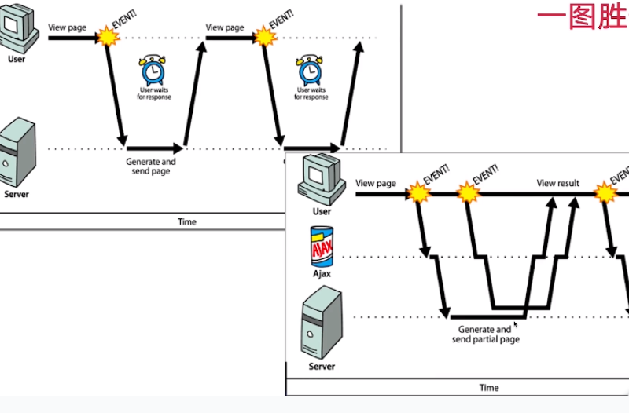
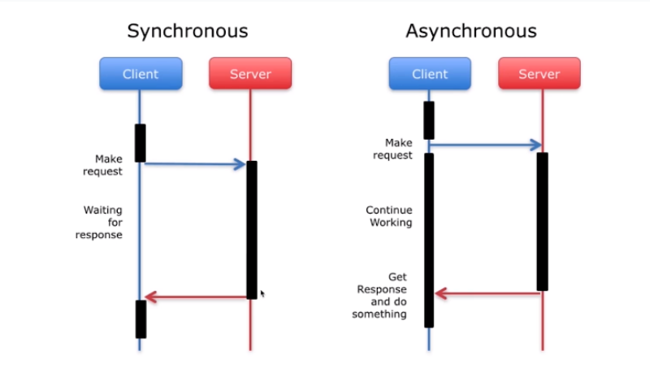

1.进程和线程
①与操作系统的关系
- 一个操作系统可以拥有多个进程（process）
- 一个进程可以拥有多个线程（thread）
- 即操作系统是包含多个进程的容器，而每个进程又都是容纳多个线程的容器。
②进程定义
- Oracle 的官方定义：
- 进程：使用 fork 系统调用创建的 UNIX 环境（包括文件描述符、用户 ID 、CPU 使用时间、存储器、IO 设备、内存等），它被设置为运行程序。
- 线程：在进程上下文中执行的一系列指令
- 通俗理解进程：
- 进程指的是程序的一次执行。在用户下达运行程序的命令后，就会产生进程。没有运行的程序占用的空间大部分是磁盘空间，将程序运行起来时就变成了一个进程。
- 比喻：进程是对代码的实例化
- 在任务管理器中可以查看正在运行的进程：

- 总结进程：进程是程序的真正运行实例，是资源分配的基本单位。内存、CPU 等资源都是以进程为单位进行分配的。
③线程定义
1 | /** |
- 程序运行前：

- 程序运行过程：

- 程序运行结束：
- 通俗理解线程：
- 线程是 CPU 的基本调度单位，每个线程执行的都是进程代码的某个片段。
- 进程是线程的容器，让线程利用进程中的资源执行代码。进程的线程数量若是大于 1，则是多线程的情况，多个线程帮助同一进程执行代码。
④两者的异同
- 起源不同
- 回顾操作系统的历史，先有进程后有线程。
- 由于处理器的速度往往比外设（键盘、硬盘等）快，所以为了提高 CPU 的利用率，才诞生了线程，目的是提高程序的执行效率。
- 概念不同
- 进程是具有独立功能的程序运行起来的一个活动，是一个实例，也是系统分配资源和调度的独立单位。
- 线程是 CPU 的基本调度单位
- 内存共享方式不同
- 对于进程而言，每个进程都会被操作系统分配到一定的内存，不同进程之间的内存通常是不共享的。例如：浏览器无法访问正在播放的 qq 音乐，它们之间想要通讯的话，需要使用进程间通讯 RPC。
- 线程与线程之间服务于同一个进程，需要合作，所以两个线程之间通讯很容易，可以共享由操作系统分配给其父进程的相同内存块。
- 拥有的资源不用
- 线程本身是进程的一部分，拥有的资源一定少于进程。
- 不同的线程之间共享的内容：①进程代码段（重点）、②进程的公有数据（利用这些共享的数据，线程很容易实现互相通讯）、③进程打开的文件描述符、④信号的处理器、⑤进程的当前目录、⑥进程用户 ID 与进程组 ID
- 不同的线程之间独有的内容：①线程 ID、②寄存器组的值、③线程的堆栈（重点）、④错误返回码、⑤线程的信号屏蔽码
- 进程和线程的数量不同
- 进程只有一个，线程可以有多个。
- 一个进程至少拥有一个线程，否则没有办法执行。
- 开销不同
- 因为进程和线程本身不是一个数量级的东西，所以线程始终比进程更轻量级。
- 线程的创建、终止时间比进程短。
- 同一进程内的线程切换时间比进程切换时间短
- 同一进程的各个线程间共享内存和文件资源，可以不通过内核进行通信。而进程间想要通信，需要借助内核帮忙。
- 相同点：从生命周期 / 状态上来看，进程和线程从创建到结束都有就绪、等待、运行等状态。
⑤Java 语言和多线程的关系
- Java 语言的显著优势：在设计之初就支持多线程（当时大部分编程语言不支持多线程）。
- Java 语言可以将我们创建的线程一对一映射到操作系统的内核线程中。而有些语言的线程是虚拟线程，不会在操作系统中对应的建立线程。
- JVM 自动启动线程：即使在代码中不显式的创建线程，在运行 main 函数时，JVM 也会自动地启动其他线程，这些线程都有特定的含义。
1 | /** |
- Signal Dispatcher：把操作系统发来的信号分发给适当的处理程序，用于连接操作系统和应用程序。
- Finalizer：负责对象的 finalize() 方法。在每个对象结束的时候，可能会实现 finalize() 方法，主要是为了处理该方法。但是随着 Java 语言的发展，不再推荐使用该方法。
- Reference Handler：和 GC、引用相关的线程。将每一个对象的引用记录在案，以便配合 GC 进行垃圾回收。
- main：主线程，用户程序的主入口，编写的代码从这里开始执行。
- 以上线程都是 JVM 自动创建的，由此可以看出 Java 语言和多线程息息相关。
2.多线程
①定义
- 多线程：在单个进程中运行多个线程
- 多线程程序：如果一个程序允许运行两个或两个以上的线程，那么它就是多线程程序。
- 现在绝大部分的程序都是多线程程序。例如：在浏览器中可以同时打开几个网页、同时下载几个文件，以及服务端可以同时处理多个请求。
- 每个线程拥有自己的独立资源（ID、堆栈等），进程的内存空间对每个线程敞开，每个线程都可以到进程的内存空间中获取想要的资源并且互相通信。
- 相互独立的任务：没必要使用多线程
- 数据和资源共享的任务：需要使用多线程，并且要考虑线程的同步，确保线程的安全。
②多线程实例
- 多线程实例：抢火车票
- 最开始在火车站买火车票，是全国统一进行放票。假设全国使用同一个服务器（类比为一个进程）进行放票，而多个售票窗口就可以类比为多个线程。不同的线程之间互相配合或竞争。
- 不断迭代后：
- 增加放票时间段（分散压力），不同的车次有自己的放票时间。
- 增加候补功能
- 增加买票限制
- 以上都是为了减少服务器的并发压力
③为什么需要多线程？
- 提高 CPU 的利用率（最主要的目的）
- 目前大部分 CPU 都是两核或者两核以上，如果不发挥多线程的优势，始终使用单线程，就会浪费计算资源。多线程程序可以充分发挥多核 CPU 的优势，提高计算机的运行效率。
- ①提高了处理速度（CPU 的运行效率远远超过内存、磁盘、外设等）
- ②避免了无效等待（在读取磁盘 IO 的时候，CPU 没有必要等待，而应该去做其他的事情。）
- ③提高了用户体验：避免卡顿、缩短等待时间（并行处理，提高性能，例如 Tomcat 服务器用多个线程去接收 HTTP 请求，可以同时服务于多个用户。）
- 便于编程建模（简化任务）
- 将大任务拆解为 A、B、C、D 并建立模型，类似的任务都可以使用模型处理。然后用多线程分别执行这 4 个任务，就简单很多。因为每个子任务的目的明确、功能单一。
- 计算机性能定律：摩尔定律失效，阿姆达尔定律登上舞台。
- 摩尔定律：当价格不变时，集成电路上可容纳的晶体管数目约每隔 18 个月便会增加一倍，意味着 CPU 的性能可以提高一倍。这个定律告诉我们长期以来 CPU 的性能都是以指数型快速增长的。但是，近年来陷入了瓶颈。
- 阿姆达尔定律：处理器（CPU）越多，程序的执行速度就越快。但是执行速度也有上限，取决于程序中串行部分的比例，并行的比例越高，多处理器的效果越明显。对于串行任务，无论有多少 CPU 资源，都没有办法提高速度。
- 并行比例与提升速度的关系：
- 在未来，CPU 的性能的提升速度放缓了，这就要求我们把程序中更多可并行的部分并行化，以提高程序的性能。
④什么场景中会用到多线程？
- 执行耗时任务（IO、磁盘读写、网络通信等）新开线程，不但不会影响主程序的运行，也不会因为耗时任务执行时间过慢而影响其他任务的运行。
- 为了同时做多件不同的事：①使用浏览器的同时听音乐、②后台定时任务等
- 提高工作效率、处理能力
- ①Tomcat 可以同时并行处理多个线程进来的请求
- ②下载文件时可以选择线程数，多线程并行下载（每个线程都去和服务器通信，都去做独立的下载任务，并且把下载的任务进行分割，最后再把下载到的文件拼接起来），以提高下载效率。
- ③NIO：将 IO 操作升级为多线程操作，提高了 IO 的处理能力。
- 需要同时有很大并发量的时候（比如进行服务器承受压力的能力的测试时，需要多线程并行请求）
⑤多线程的局限
- 性能问题：上下文切换带来的消耗
- 线程之间切换时会有上下文切换，会保存一些 CPU 所需要的数据，如当前运行到哪一行代码等。
- 异构化任务很难高效并行
- 每个任务之间的结构都不一样，很难总结为多个任务的拆解。
- 带来线程安全问题：包括数据安全问题（例如
i++总数不一致）以及线程带来的活跃性问题（线程饥饿、死锁等）- 线程饥饿：某个线程想要执行任务，但是被其他线程强先，这个线程始终没有事干。
- 死锁：两个线程相互拥有对方所需要的资源但都不肯放手，于是陷入无穷等待。
3.串行、并行、并发
①串行、并行、并发
- 串行：大家排队一个个来
- 左图：线程 A -> B -> C 依次执行
- 右图：将数据一位一位发送
- 并行：大家一起来
- 左图：线程 A / B / C 同时执行
- 右图：将 8 个数据一次性发送出去
- 并发（Concurrency）：单核就能实现并发、属于逻辑上的同时运行（由于处理器的处理速度很快，所以线程之间的切换肉眼是感知不到的，感觉它是在同时执行多个程序，实际某一时间只有一个程序执行（单处理器））。
- 在物理层面并发就是串行，只不过是在多个程序上快速的来回切换而不是一个个依次执行，所以在用户看来相当于三个程序同时执行。
- 并行（Parallelism）：多核处理器，物理上的同时运行，多个处理器都在同时执行任务。
- 并行是真正的 “同时” 运行：在同一时刻，有多个任务同时执行。
- 单核处理器是无法实现并行的，因为单核处理器无法在同一时刻执行多个任务。
- 并发可以对应到两个不同的概念
- ①形容多个任务的执行状态：
- 两个或多个任务可以在重叠的时间段（不是指真正重叠的同一时刻，而是一段时间内交替运行）内启动，运行和完成。
- 并行（两个线程同时执行）一定是并发，两者是包含关系。
- 并发 + 多核 + 同一时刻执行同一段代码 = 并行
- 并发：不同的线程交替给一个 CPU 执行（蓝色竖线：CPU 的时间片）
- 并行：多个线程同时被多个 CPU 执行
- ②对 “并发性” 的简称：
- 如果一个程序具有并发性，指的是程序不同的部分可以无序或同时执行，且不影响最终的执行结果。
- 在不同核心数的计算机上的表现不同：
- 在多核 CPU 上，可以并行执行并发性程序。
- 在单核 CPU 上，可以并发执行并发性程序，串行执行非并发性程序。
- 此时，并行和并发的概念并不在同一维度上。并发指的是并发性，并行指的是多个程序在同一时刻同时执行。一个程序如果想要并发 / 并行执行，前提条件是它具有并发性。并发性是并发执行和并行执行的前提条件和必要条件。如果一个程序可以并行执行，就代表它一定具有并发性。
②是什么让并发和并行成为可能？
- CPU 升级
- CPU 之前一直遵循摩尔定律，性能提升的很快，它的处理速度远远比其他部件快。但是每个 CPU 同一时刻只能执行一个指令，出于这个原因，操作系统开发出了新的技术，可以让用户同时运行多个进程或者多个线程。
- 操作系统的升级
- 升级之后将 CPU 完美的调度了起来，即便是单核 CPU，也能让不同的进程使用时间片的方式（抢占式的方式）不停地切换。
- 抢占式多任务处理：现代 CPU 最主要的一种处理方式，即操作系统有权利中断正在执行的任务。
- 诞生多核处理器后，操作系统可以自动检测 CPU 核心的数量，为每个核心分配不同的任务，以实现真正地同一时刻运行多个程序。
- 编程语言的升级
- Java 语言诞生之前，很多编程语言不支持多线程。随着 Java 的诞生，多线程编程开始逐渐火热并且发展成熟。
4.高并发
①定义
- 高并发：同时有很多个请求发送给服务器系统，服务器会并行处理。
- 高并发场景：天猫双十一、春晚微信摇一摇、12306 卖火车票
- 一般将系统的承受能力设计为目前系统访问量的十倍比较合适
②高并发和多线程的异同？
- 高并发：指大量的请求同时到达服务器所带来的结果（结果指服务器需要同时处理很多请求），它是一种状态。系统需要应对高并发这种状态所带来的后果，如果处理不当，会导致请求的响应速度慢、无响应甚至服务器死机。
- 多线程并不意味着高并发，多线程编程是一种编程方式，是一种解决方案，不仅可以解决高并发所带来的线程安全问题 / 性能问题，还可以提高硬件的利用率，以便获取到更多的资源，从而解决高并发带来的服务器死机、响应慢等问题。
- 多线程编程是我们应对高并发场景的一种重要的解决方案。
- 高并发并不一定要通过多线程的方式解决
- 例如：解决数据库的高并发问题可以利用 Redis 缓存层（可能带来缓存不一致的问题，但不会带来线程安全问题）
- 总结：高并发并不意味着多线程（例如：Redis 底层是用单线程处理的）。高并发是一种状态，作为服务器开发者，最好用多线程的方式解决，这样可以提高 CPU 等资源的利用率，加快用户的响应速度。但是在场景不同，资源不同的情况下，也可以选择其他的解决方案。
③高并发有哪些指标？
- QPS（Queries Per Second）：每秒钟的查询（请求）数
- PV（Page View）：24 小时内的页面点击量（综合浏览量）
- UV（Unique Visitor）：24 小时内访问的用户数量（根据 Cookie）、UV <= PV
- 并发连接数：某个时刻服务器所接受的请求的数目。
- 对于同一个用户而言，可以同时产生很多个会话 / 连接，所以数目 > 同时在线的用户数量。
- 对服务器来说，这个连接有一个上限
- 服务器平均请求等待时间：服务器处理一个请求所花费的时间
5.同步与异步、阻塞与非阻塞
①同步与异步
- 同步与异步：被调用方是否主动告诉调用方结果。
- 同步与异步是被调用方（即服务端）的行为，而不是调用方的行为。
- 同步：在没有得到结果之前，服务端不返回任何结果。
- 异步：调用在发出之后，服务端会立刻返回，告诉调用方 “我收到你的请求了，我会马上处理的”，等服务器处理完成以后，会再次告诉调用方 “我已经处理完了”。


②阻塞与非阻塞
- 站在线程状态的角度：阻塞指当前线程不能继续执行，需要等待一段时间或者被唤醒。
- 站在线程发出请求的角度：我是调用方，我调用一个东西后，在返回结果前是否还能做其他事情。
- 阻塞与非阻塞是调用方的行为，而不是被调用方的行为。
- 阻塞：调用一个东西后，返回结果前什么也不做。
- 非阻塞：调用一个东西后，返回结果前做其他事情。
③同步阻塞、同步非阻塞、异步阻塞、异步非阻塞
- 同步不一定是阻塞，阻塞也不一定是同步。
- 异步不一定是非阻塞，非阻塞也不一定是异步。
- 同步阻塞：（被调用方）执行完成后才返回结果、（调用方）在返回结果前什么也不做。
- 同步非阻塞：（被调用方）执行完成后才返回结果、（调用方）在返回结果前做其他事情，不时地检查一下被调用方是否返回结果。
- 异步阻塞：调用方在发出请求之后，被调用方会立刻告诉调用方已经收到请求，当被调用方处理完成以后，会再次告诉调用方已经处理完了、但是（调用方）在返回结果前什么也不做。
- 异步非阻塞：调用方在发出请求之后，被调用方会立刻告诉调用方已经收到请求，当被调用方处理完成以后，会再次告诉调用方已经处理完了、（调用方）在返回结果前做其他事情，等待被调用方主动返回结果。
6.常见面试问题
①进程和线程的异同？
- 不同：起源、概念、内存共享方式、拥有的资源、数量、开销
- 相同：生命周期（状态）
- 具体见 1.进程和线程——④两者的异同
②并行和并发的异同？
- 都在形容一个程序的运行状态时：并行一定是并发。
- 并发也可以形容一个程序的属性，即程序是否具有并发性。若是程序没有并发性，表示程序只能串行执行。
③多线程就是高并发吗？有什么反例？
- 高并发指服务器同时接受很多请求，受到极大压力。
- 多线程是针对高并发的一个解决方案，可以使用多线程将这个压力迅速化解。
- 反例：Redis 本身是单线程的，但是同样可以支持高并发的场景。
- 应对高并发时，不仅可以通过多线程的方式解决，也可以从整体架构、缓存层的设计、MQ 队列等地方着手解决。
④多线程可以提高程序的执行效率，你知不知道有哪些弊端？
- 性能问题（上下文切换、保存 CPU cache）
- 异构化任务或不能并行执行的任务用多线程反而不如用单线程合适
- 线程安全问题
⑤什么是同步？什么是异步？什么是阻塞？什么是非阻塞？
- 同步、异步指的是被调用方在调用结束后是否主动返回结果
- 阻塞、非阻塞指的是调用方在调用后是否可以去做其他事情
- 具体见 5.同步与异步、阻塞与非阻塞
⑥在单核 CPU 上运行多线程程序有意义吗？
- 有意义，虽然在单核 CPU 上执行真正的并行是不可能的，因为只有一个处理器，但是对于应用程序而言，我们不知道它未来会运行在单核 CPU 还是多核 CPU 上，所以在编写时肯定以多核 CPU 为准。其次，对于多线程程序，当其中一个线程执行缓慢或者被阻塞时，其他线程可以利用这些时间（如读取磁盘的时间）做其他事情，让程序保持高效运转。
- 如果 CPU 被挤满，并不是说在单核 CPU 上运行多线程程序没有意义，而是说线程的数量设置不合理，应该减少线程的数量。
附录
- 我的个人博客：messi1002.top
- 如有错误或疑惑之处 请联系 wjymessi@163.com